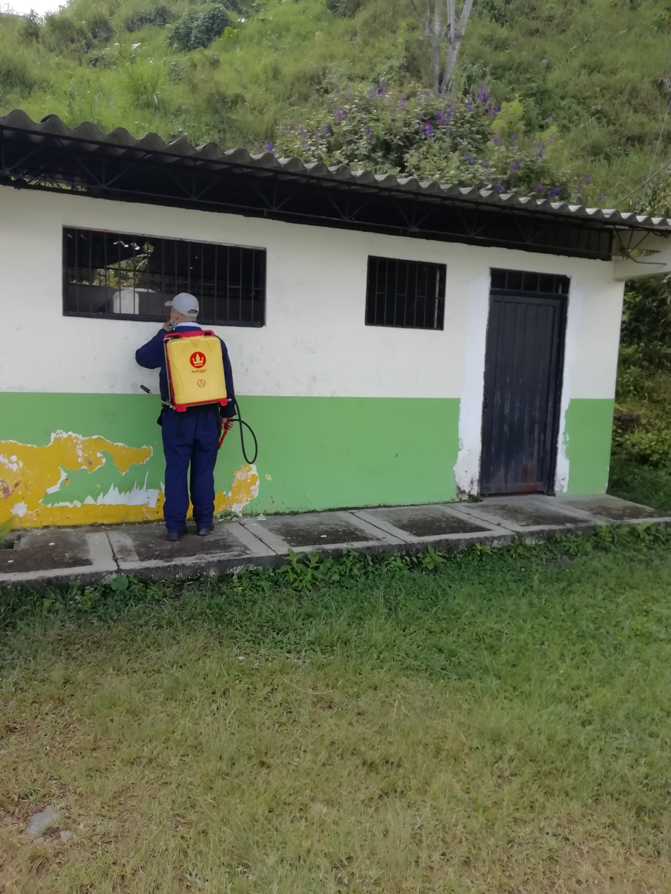
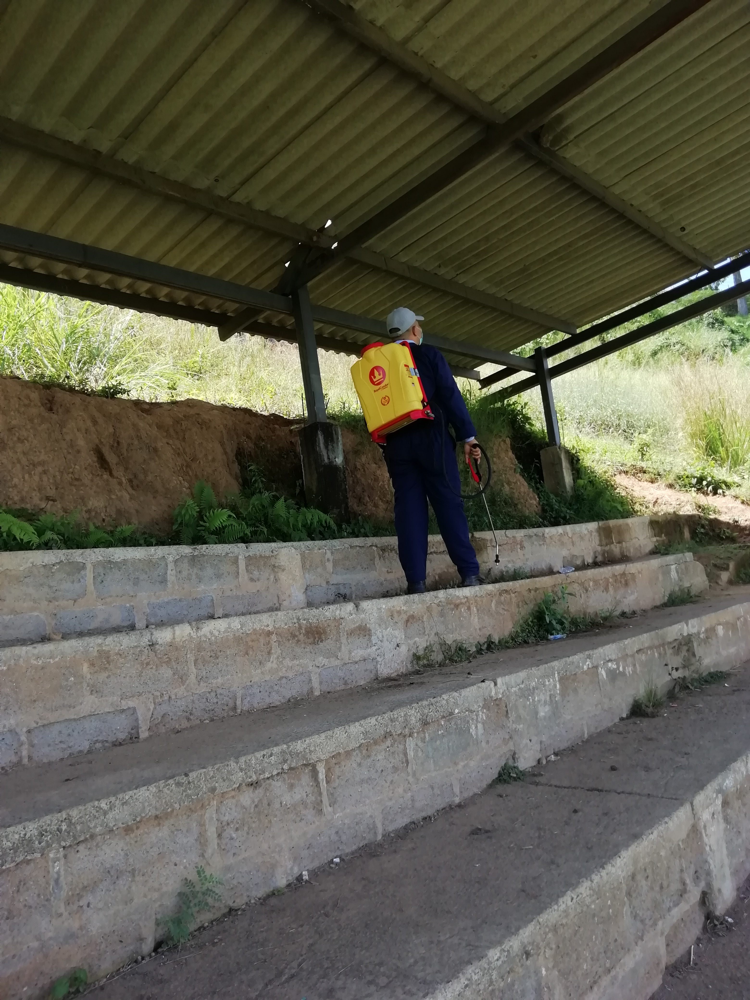
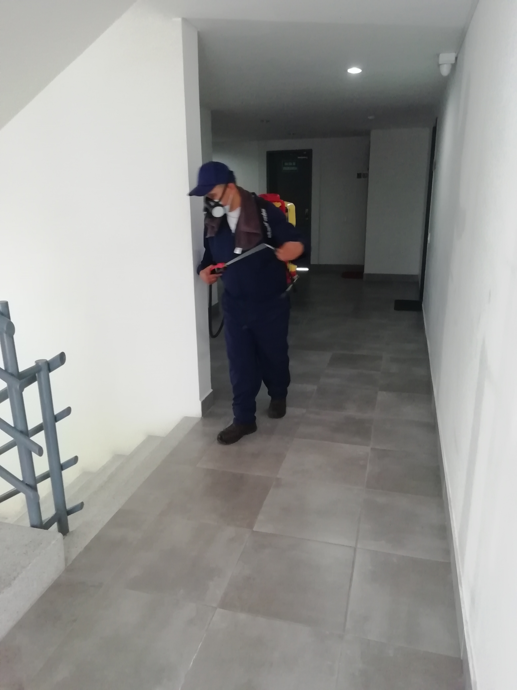
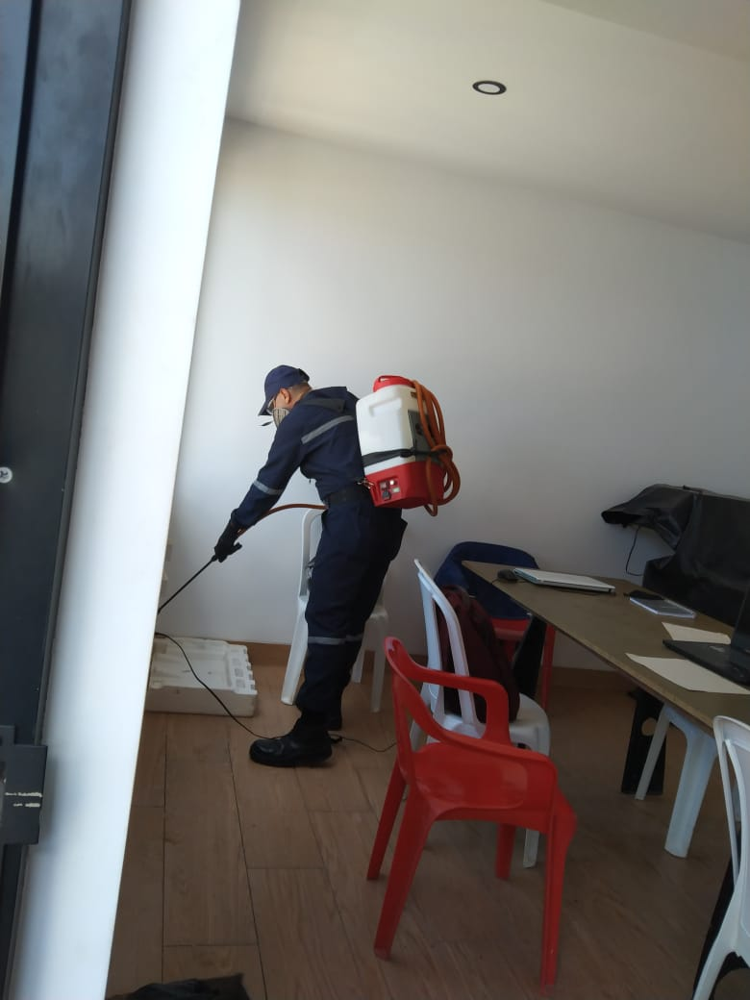
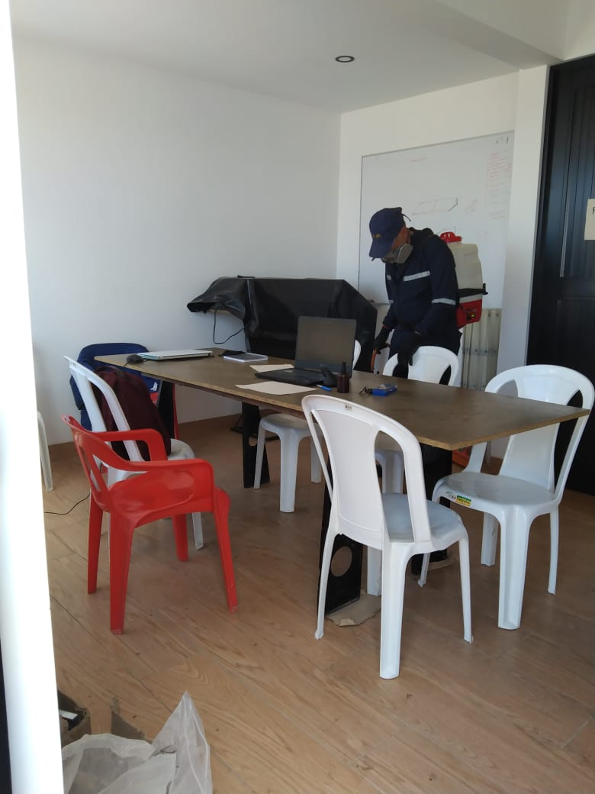
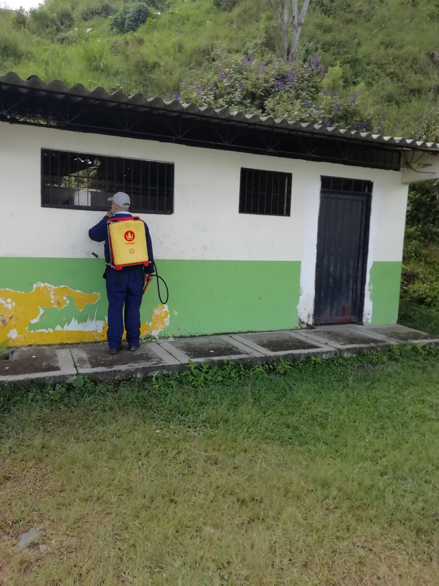
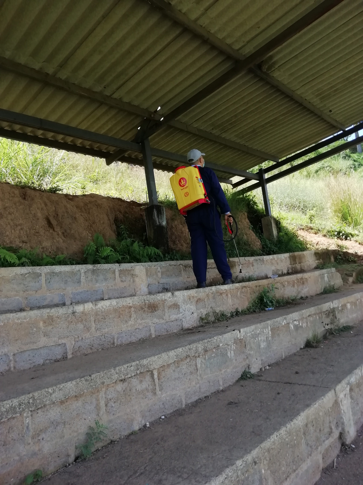
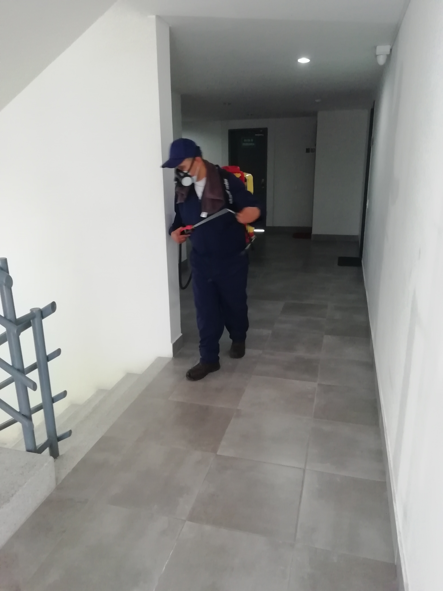
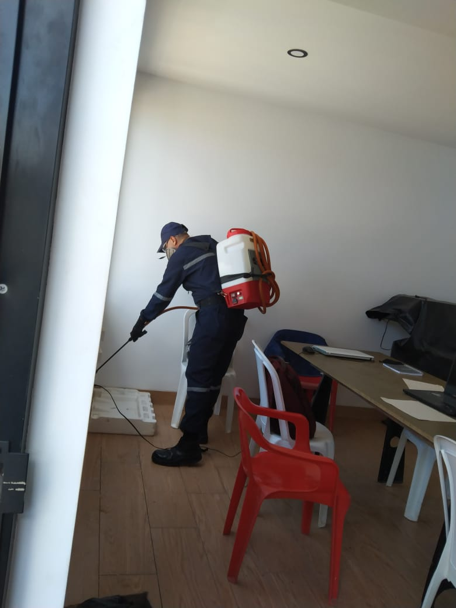
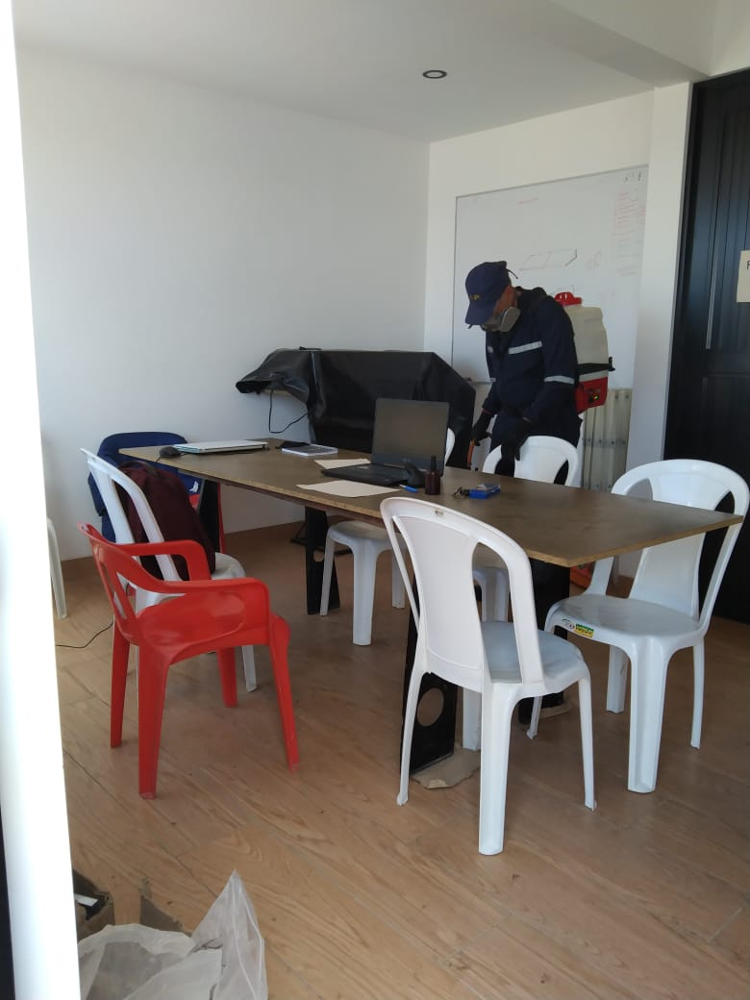

¿Quiénes Somos?
*Fumigaciones Jotanovo
Prestamos Servicios de control de plagas a Conjuntos Residenciales, Centros Comerciales, Fábricas, Casas, Apartamentos, todo tipo y tamaño de empresas y negocios, Etc. Diseñándoles un conjunto de programas para el control de plagas, ajustado a sus necesidades y presupuesto.
Visión
Fumigaciones Jotanovo es una de las principales empresas dedicadas al servicio de control de plagas y mantenimiento integral, siendo líder y modelo a seguir. Diferenciándonos por brindar a nuestros clientes calidad humana, seguridad, servicios y productos de primera calidad a costos competitivos, superando siempre sus expectativas, logrando así su confianza apoyados en nuestros valores éticos.
Misión
Fumigaciones Jotanovo ofrece un plan de manejo integral formado por un conjunto de actividades donde el uso de insecticidas se maneja en un rango bajo. Para el efecto de los controles utilizamos productos de la mejor calidad, especialmente recomendados para ser aplicados en áreas delicadas de fabricación, distribución y venta de alimentos y donde trabajan personas.
Objetivo
Ofrecer tecnología , eficacia, y perpetrar una minuciosa selección de productos químicos a ser utilizados, para la solución de diferentes problemas que presenten nuestros clientes y así poder lograr la satisfacción total de cada uno de ellos, cuidando su salud y preservando y manteniendo el medio ambiente.
Nuestros servicios
1Manejo de roedores
Inspecciónanos el lugar para la Identificación de signos de presencia como roeduras, huellas, fecas. Minimización de presencia utilizando cebos rodenticidas. Aplicamos un insecticida residual para controlar las pulgas que abandonarán a los roedores muertos. eliminamos de los roedores muertos y el raticida no consumido.
2Desinsectación
La desinsectación es una técnica de manejo y control de plagas que tiene como finalidad la eliminación de insectos voladores y rastreros, existe una gran Plagas variedad de técnicas de aplicación que depende de la superficie y zona tratar.
3Otros Servicios
Recarga de extintores y Lavado tanques de reserva
Portafolio de Imagenes
 










Beneficios por nuestros servicios